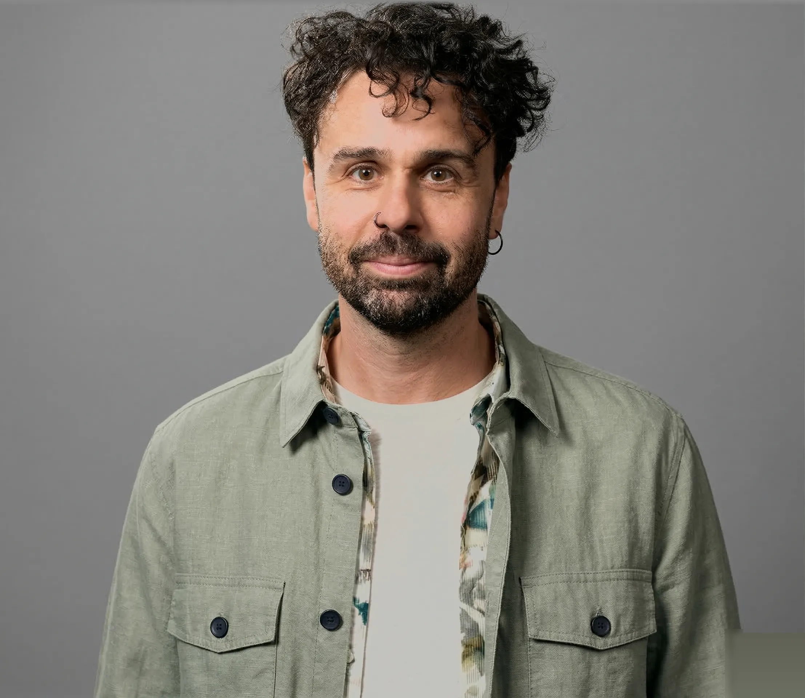

KI-Didaktik für Lehrpersonen und Dozierende
KI ist da. Die Frage ist nicht ob, sondern wie.
Dein Material.
Dein Urteil.
Mit KI.
KI liefert Vorschläge. Du entscheidest, was in den Unterricht geht. KIalog zeigt dir, wie du KI-Output in 60 Sekunden prüfst. Praxisorientiert, keine Theorie. Für Berufsfachschulen, Gymnasien und Hochschulen.
Von Manuel Hirschi · gibb Bern / PH FHNW / UZH · 18 Jahre Unterrichtserfahrung, alle Stufen
Kommt dir das bekannt vor?
Meine Lernenden nutzen ChatGPT. Ich weiss nicht, wie ich damit umgehen soll.
Ich will KI einsetzen, aber ich weiss nicht wo anfangen.
Wie soll ich prüfen, wenn alles mit KI geschrieben werden kann?
Wenn du dich hier erkennst, gut.
Genau dafür ist KIalog gemacht. Hier sind die Zahlen dazu ↓
Du bist nicht allein damit.
Aber du brauchst ein Werkzeug.
KI verändert den Unterricht auf allen Stufen. Die Fragen sind überall dieselben: Wie prüfe ich, wenn Lernende KI nutzen? Wie differenziere ich sinnvoll? Welche Tools darf ich einsetzen? Wer KI-Kompetenz fördern soll, braucht zuerst selbst einen sicheren Zugang.
Es gibt KI-Tool-Schulungen und es gibt teure CAS-Programme. Was fehlt, ist praxisorientierte KI-Didaktik, die am nächsten Tag funktioniert. KIalog schliesst diese Lücke.
KIalog Methode
Eigenes Material rein. Fertiger Unterricht raus.
Werkzeug statt Wundermittel. Praxis statt Theorie.
Dein Material rein
Dossier, Arbeitsblatt, Lehrmittelseite. Was du hast, reicht. Du lädst es in ein KI-Tool wie NotebookLM. Was rauskommt, lässt sich prüfen, weil die KI nur aus deinem Material arbeitet.
Drei Niveaus raus
Differenziertes Material, Prüfungsvarianten, Scaffolding, Zusammenfassungen. Du bestimmst, was du brauchst.
Du beurteilst
KI liefert einen Vorschlag. Du prüfst in 60 Sekunden: Passt das Niveau? Stimmen die Fakten? Taugt das für deine Klasse? Was in den Unterricht geht, bestimmst du.
60 Sekunden. Ein Arbeitsblatt. Drei Varianten.
Drei Dinge, die du nicht vergisst.
Werkzeug, kein Wundermittel.
KI ist der Taschenrechner der Geisteswissenschaften. Nützlich, schnell. Aber du musst die Fallstricke kennen, und ich zeige sie dir.
Du bleibst im Lead.
KI liefert einen Entwurf. Deine pädagogische Einschätzung bleibt das Mass aller Dinge.
Sofort einsetzbar.
Jeder Baustein, den du in der Werkstatt baust, funktioniert ab dem nächsten Unterrichtstag. Keine Theorie, die in der Schublade bleibt.
Warum ich

Ich habe auf jeder Stufe unterrichtet, von der Primarschule bis zur Universität. 18 Jahre, alle Kontexte. Aktuell unterrichte ich an der gibb Bern, bilde Lehrpersonen an der PH FHNW aus und forsche an der Universität Zürich daran, wann KI-Output vertrauenswürdig ist und wann nicht.
Diese Forschung steckt in der Werkstatt. Was ich dir zeige, funktioniert, weil ich es selbst jeden Tag anwende.
Praxis an der gibb, Ausbildung an der PH FHNW, Forschung an der UZH. Drei Perspektiven, ein Format.
Drei Formate. Klare Preise.
Je nach Schule und Zeitrahmen, du entscheidest, wie tief du einsteigst.
Impuls
60–90 Minuten · Weiterbildungstag oder Schulkonferenz. Eine Demonstration mit echtem Unterrichtsmaterial. Kein Theorievortrag.
KIalog Workshop
Halbtag (3.5h) oder Ganztag (7h) · Inhouse, 6–16 Teilnehmende. Du arbeitest mit deinem Material und nimmst fertige Unterrichtsbausteine mit, Promptkarten und eine Checkliste zum Bewerten von KI-Output.
Fachentwicklung
1 Semester · Workshop, Prompt-Training, laufende Begleitung und Dokumentation. Für Schulen und Hochschulen, die KI-Didaktik nachhaltig verankern wollen.
Ein CAS «KI für Lehrpersonen» kostet CHF 9'900 pro Person (PHBern, 16 ECTS). KIalog bringt dein ganzes Team für einen Bruchteil weiter.
Auch als Keynote (45–60 Min) für Tagungen, Konferenzen und Schulkonvente buchbar. Schreib mir.
Häufige Fragen
Nein. KIalog setzt keine Vorkenntnisse voraus. Du musst KI nicht mögen. Du musst nur einmal sehen, was möglich ist, mit dem Material, das du schon hast. Der Rest kommt von selbst.
Für die gesamte Sek II (Berufsfachschulen, Gymnasien, FMS, Brückenangebote) und für Pädagogische Hochschulen. Die Beispiele im Workshop passen wir an deine Stufe und dein Fach an.
NotebookLM ist ein KI-Tool von Google. Du lädst dein Material hoch und bekommst Antworten, die sich direkt auf deine Quellen stützen. Nichts Erfundenes, du siehst immer, woher der Output kommt. KIalog ist aber toolunabhängig und funktioniert auch mit Claude oder ChatGPT.
Mit der KIalog-Methode. Du nimmst dein eigenes Material und generierst daraus differenzierte Bausteine. Im Workshop baust du einen fertigen Baustein und lernst Routinen, die du ab dem nächsten Tag einsetzen kannst.
Genau das ist der Kern von KIalog. KI-Output klingt oft professionell, ist aber nicht immer korrekt. In der Werkstatt lernst du, den Output in 60 Sekunden zu prüfen: Passt das Niveau? Stimmen die Fakten? Taugt das für deine Klasse? Dein Fachurteil bleibt der Massstab, nicht die KI.
Beides ist möglich. Inhouse-Angebote laufen in der Regel über Schulleitung oder Abteilungsleitung. Du kannst aber auch direkt anfragen und ich helfe dir, das intern weiterzugeben. Angebote sind auch über Kanton oder PH als eingekaufte Weiterbildung buchbar.
Manuel Hirschi, Bildungswissenschaftler. 18 Jahre Unterrichtserfahrung von der Primarschule bis zur Hochschule. Aktuell Lernbegleitung Deutsch (gibb Bern), Dozent (PH FHNW), Doktorand (Universität Zürich).
Eine KI-gerechte Prüfung verlangt Dinge, die KI nicht zuverlässig leisten kann: Bezug auf persönliche Erfahrung, lokale Kontexte, eigene Begründungen, mündliche Erklärung. In der Werkstatt lernst du, solche Aufgaben zu formulieren.
Ja, alle Formate sind als SCHILW buchbar. Ich komme an deine Schule, ihr arbeitet mit eurem Material. Im Kanton Bern können Schulen Kosten für schulinterne Weiterbildung über die BKD rückerstatten lassen. Ich helfe bei der internen Weiterleitung.